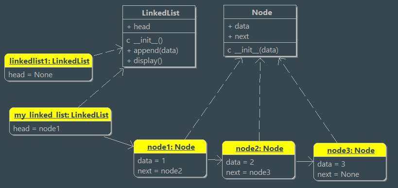

Bei einer Schnitzeljagd steht auf jedem Zettel eine Aufgabe und der Ort des nächsten Zettels. Wer den ersten Zettel hat, kann alle anderen nacheinander finden – aber nicht direkt zum fünften springen. Genau so ist eine verkettete Liste aufgebaut.
In 3.0.1 hast du gesehen, warum Einfügen und Löschen in einer Python-Liste O(n) kosten: Die Elemente müssen lückenlos nebeneinander liegen, also muss beim Einfügen alles dahinter rutschen. Die verkettete Liste verzichtet auf diese Bedingung. Lege deine Lösungen zu dieser Seite in deinem Repository im Ordner 1_listen ab (siehe 3.0.2).
Diese Seite ist ein Lernpfad in sechs kurzen Schritten. Jeder Schritt hat dieselbe Form: Erst liest du kurz, worum es geht, dann zeigt dir ein Video (1–2 min, ohne Ton) die Idee und den Code in Thonny, dann prüfst du mit einer kleinen Frage, ob du es verstanden hast. Halte die Videos ruhig an und tippe in Thonny mit.
NodeappendZum Mittippen: 1_listen/verkettete_liste.py – neu anlegen. Sie wächst mit jedem Schritt und in den Aufgaben 3.1.1 und 3.1.2.
Commit nach jedem Schritt mit Code, z. B. 3.1 Schritt 2: Klasse Node angelegt · 3.1 Schritt 3: LinkedList mit append (Regeln auf Seite 3.0.2)
Zum Schluss findest du die ganze Klasse zum Nachlesen, einen Vergleich mit der Python-Liste und die Übungsaufgaben.
Ein Knoten einer einfach verketteten Liste besteht aus zwei Teilen:
None am Ende.Im Video siehst du, wie Knoten zu einer Kette verbunden werden und warum die Liste nur ihren ersten Knoten kennt.
Eine verkettete Liste enthält die Werte 7, 4 und 9 in dieser Reihenfolge. Zeichne sie als Kästchen mit Pfeilen. Worauf zeigt head? Was steht im next-Feld des Knotens mit der 9?
head → [7|•] → [4|•] → [9|None]. head zeigt auf den Knoten mit der 7, im next-Feld des Knotens mit der 9 steht None, weil er der letzte ist.
Weiter mit Schritt 2: Die Klasse Node →
NodeIn Python ist ein Knoten ein Objekt der Klasse Node mit den Attributen data und next. Im Video schreibst du die Klasse in Thonny und verkettest drei Knoten von Hand in der Kommandozeile. Achte rechts im Speicherbild darauf, dass node1.next = node2 nur einen Pfeil setzt und nichts kopiert.

Node in Thonny – Knoten erzeugen und von Hand verketten (ca. 2 min)Jetzt du – mittippen: Lege 1_listen/verkettete_liste.py an und tippe den Code aus dem Video ab: die Klasse Node. Starte mit F5 und probiere in der Kommandozeile aus: node1 = Node(1) · node2 = Node(2). Danach committen, z. B. 3.1 Schritt 2: Node angelegt.
Zum Nachlesen steht derselbe Code mit allen Erklärungen in Beispiel 1:
In Thonny wird eingegeben: a = Node("x"), b = Node("y"), b.next = a. Was geben print(b.next.data) und print(a.next) aus? Was passiert bei print(a.next.data)? Überlege erst, dann probiere es aus.
b.next.data ist x, denn b.next zeigt auf den Knoten a. a.next ist None. a.next.data löst einen AttributeError aus, weil None kein Attribut data hat.
Weiter mit Schritt 3: Anhängen mit append →
appendDamit man Knoten nicht von Hand verketten muss, gibt es die Klasse LinkedList. Sie speichert nur head, den ersten Knoten. Die Methode append hängt hinten an: Dazu läuft eine Hilfsvariable current vom Anfang bis zum letzten Knoten. Achte im Video auf den Sonderfall der leeren Liste und darauf, wo current stehen bleibt.
append – Schritt für Schritt (ca. 2 min)Jetzt du – mittippen: Ergänze in 1_listen/verkettete_liste.py den Code aus dem Video: die Klasse LinkedList und die Methode append. Starte mit F5 und probiere in der Kommandozeile aus: liste = LinkedList() · liste.append(1). Danach committen, z. B. 3.1 Schritt 3: LinkedList, append ergänzt.
Eine Liste hat 5 Knoten. Wie oft wird beim nächsten append die Zeile current = current.next ausgeführt? Und warum braucht append den Fall if self.head is None?
4-mal: current startet beim 1. Knoten und muss bis zum 5. weiterlaufen. Bei einer leeren Liste gibt es keinen letzten Knoten – current wäre None und current.next würde einen AttributeError auslösen. Deshalb wird der neue Knoten dann direkt zum head.
Weiter mit Schritt 4: Durchlaufen und Suchen →
Fast jede Methode einer verketteten Liste beginnt gleich: current = self.head, dann current = current.next, bis man am Ziel ist. Im Video siehst du das an display, das alle Werte ausgibt, und wie Suchen nach demselben Muster funktioniert. Achte darauf, dass head dabei nicht verändert wird – und wie join die Texte zusammenklebt.
Jetzt du – mittippen: Ergänze in 1_listen/verkettete_liste.py den Code aus dem Video: die Methode display. Starte mit F5, lege die Objekte wie im Video in der Kommandozeile an und probiere dann aus: liste.display(). Danach committen, z. B. 3.1 Schritt 4: display ergänzt.
In display lautet die Schleife while current is not None, in append dagegen while current.next is not None. Erkläre den Unterschied in einem Satz.
display muss jeden Knoten verarbeiten, auch den letzten – also läuft current bis hinter das Ende (None). append muss auf dem letzten Knoten stehen bleiben, um dort anzuhängen.
Danach: Aufgabe 3.1.1 – eine fehlerhafte Ausgabemethode, die genau gegen diese Regel verstößt.
Weiter mit Schritt 5: Einfügen am Anfang →
Vorn einfügen geht ohne Schleife: Es werden nur zwei Verweise umgesetzt, deshalb kostet es O(1) – egal, wie lang die Liste ist. Die Reihenfolge der beiden Zeilen entscheidet, ob die Liste erhalten bleibt. Achte im Video darauf, welcher Pfeil zuerst gesetzt wird.
Jetzt du – mittippen: Ergänze in 1_listen/verkettete_liste.py den Code aus dem Video: die Methode insert_at_start. Starte mit F5, lege die Objekte wie im Video in der Kommandozeile an und probiere dann aus: liste.insert_at_start(0). Danach committen, z. B. 3.1 Schritt 5: insert_at_start ergänzt.
Ein Mitschüler schreibt in insert_at_start zuerst self.head = neu und danach neu.next = self.head. Zeichne, was mit der Liste 1 → 2 passiert, wenn er insert_at_start(0) aufruft.
Nach self.head = neu zeigt head auf den neuen Knoten 0. Dann setzt neu.next = self.head den Verweis von 0 auf … 0 selbst. Die Knoten 1 und 2 sind nicht mehr erreichbar, und display würde endlos 0 ausgeben.
Öffne im Kursmenü links die Seite Zeiger-Werkstatt. Dort hängst du die Pfeile selbst um. Die Übung „3.1 Einfügen am Anfang“ prüft, ob deine Reihenfolge stimmt, und zeigt dir, wenn dabei Knoten verloren gehen – so kannst du auch Kurz geprüft 5 nachstellen. In der Übung „3.1 Durchlaufen bis zum Ende“ lässt du current wie in append bis zum letzten Knoten wandern.
Danach: Aufgabe 3.1.2 – eigene Methoden zum Durchlaufen und Einfügen.
Weiter mit Schritt 6: Löschen →
Beim Löschen wird ein Knoten übersprungen: Sein Vorgänger zeigt danach direkt auf seinen Nachfolger. Deshalb muss current vor dem zu löschenden Knoten stehen bleiben. Achte im Video auf die beiden Sonderfälle: leere Liste und Wert im ersten Knoten.
Jetzt du – mittippen: Ergänze in 1_listen/verkettete_liste.py den Code aus dem Video: die Methode delete. Starte mit F5, lege die Objekte wie im Video in der Kommandozeile an und probiere dann aus: liste.delete(2) · liste.delete(0). Danach committen, z. B. 3.1 Schritt 6: delete ergänzt.
Die Liste ist 4 → 8 → 15. Auf welchem Knoten steht current, wenn delete(15) den Verweis umsetzt? Welcher Verweis ändert sich, und worauf zeigt er danach?
current steht auf dem Knoten 8, denn current.next.data ist dort 15. Das next von 8 zeigt danach auf current.next.next, also auf None – die 8 ist jetzt der letzte Knoten.
Öffne im Kursmenü links die Seite Zeiger-Werkstatt. In der Übung „3.1 Löschen“ setzt du current.next = current.next.next selbst um und siehst, dass der übersprungene Knoten danach nicht mehr erreichbar ist.
Danach: Aufgabe 3.1.3 – alle Methoden zusammen, als Kästchen mit Pfeilen.
LinkedListHier steht die vollständige Klasse aus den Videos 3–6 zum Nachlesen, mit Testprogramm, Speicherbild und Kontrolltabelle.
| verkettete Liste | Array / Python-Liste | |
|---|---|---|
| Zugriff auf das k-te Element | O(n), Liste von vorn durchlaufen | O(1), direkt über den Index |
| Einfügen/Löschen am Anfang | O(1), nur Verweise umsetzen | O(n), alle Elemente verschieben |
| Einfügen/Löschen in der Mitte | O(n) für die Suche, dann O(1) | O(n) für das Verschieben |
| Größe | wächst knotenweise, kein Umkopieren nötig | bei voller Kapazität Umkopieren in einen größeren Speicherbereich |
| Speicher | zusätzlich ein Verweis pro Knoten | kompakt, ggf. ungenutzte Reserveplätze |
Einfach verkettete Listen sind eine wichtige Datenstruktur und bilden unter anderem die Grundlage für Stapel (Stack) und Schlangen (Queue).
Alltag: Die Vor- und Zurück-Funktion deines Browsers oder die „Nächster Titel“-Taste im Musikplayer lassen sich als (doppelt) verkettete Liste umsetzen: Jede Seite bzw. jeder Titel kennt seinen Vorgänger und Nachfolger.
Beruf: Betriebssystementwicklerinnen und -entwickler verwalten z. B. im Linux-Kernel Prozesse und freie Speicherblöcke in verketteten Listen, weil ständig Elemente eingefügt und entfernt werden, ohne dass Speicher umkopiert werden darf. Auch Blockchains sind eine Form verketteter Liste: Jeder Block enthält einen Verweis (Hash) auf den vorherigen.
Eine einfach verkettete Liste ist eine dynamische Datenstruktur aus einer Folge von Knoten. Jeder Knoten speichert Daten und einen Verweis (Referenz) auf den nächsten Knoten. Die Liste selbst kennt nur den ersten Knoten (head); der letzte Knoten verweist auf None.
Zugriff auf das k-te Element: O(n), weil man von vorn durchlaufen muss. Einfügen oder Löschen am Anfang: O(1). Einfügen oder Löschen an einer bekannten Stelle: O(1), das Finden dieser Stelle kostet aber O(n).
Datei: 1_listen/verkettete_liste.py – weiterführen; füge die Methode zum Ausprobieren in deine Klasse LinkedList ein (nextNode heißt bei dir next)
Commits: 3.1.1: fehlerhaftes print_ll zum Testen eingefügt · nach der Korrektur: 3.1.1: print_ll korrigiert und getestet
Eine frühere Version der Ausgabemethode sah so aus:
def print_ll(self):
ll_str = ""
while self.head:
ll_str = ll_str + self.head.data + "--->"
self.head = self.head.nextNode
print(ll_str)Erkläre, was nach einem Aufruf von print_ll() mit der Liste passiert, und korrigiere die Methode.
Datei: 1_listen/verkettete_liste.py – weiterführen; Testfälle in 1_listen/test_verkettete_liste.py
Commits: nach Teil 1: 3.1.2 Teil 1: laenge und enthaelt ergänzt, Tests ok · nach Teil 2: 3.1.2 Teil 2: insert_after ergänzt, Tests ok · nur wenn du Teil 3 programmierst: 3.1.2 Teil 3: append in O(1), alle Tests weiter ok
laenge() und enthaelt(data).insert_after(ziel, data), die einen neuen Knoten hinter dem ersten Knoten mit dem Wert ziel einfügt.append liegt in O(n). Schlage eine Änderung der Klasse vor, mit der es in O(1) gelingt, und beurteile den Nachteil.